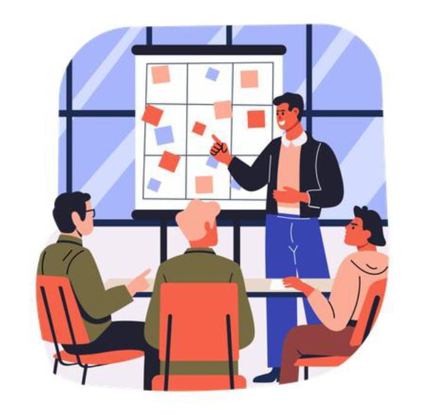

The Brainstorming Board acts as the collective digital canvas where teams map out logic, organize strategies, and host collaborative sticky note configurations.
A Brainstorming Board is a centralized hub tailored for collaborative ideation sessions. Each board functions as an isolated structural sandbox assigned to a specific App User (The Owner). Within these spaces, users can instantiate dedicated themes, structure workflows, link real-time sticky data blocks, and map complex operational relational nodes securely.
Creates isolated contextual boards with customizable titles, tags, and ownership mappings.
Coordinates incoming sticky note state updates and layout parameters across all team sessions instantly.
Enforces dynamic permission scopes to shield shared canvas layers from uninvited modifications.
Tethers action workflows right down to precise board activity sequences for deep compliance logs.
The system orchestrates automated rendering engine properties and validation gates to preserve board state consistency:
Boards automatically adapt to contain multi-lane columns, canvas grid systems, or open mind-mapping configurations to fit distinct agile frameworks.
Establishes deep structural connections with Board Members and Sticky Notes modules to enforce access rules smoothly across runtime pipelines.
Leverages ultra-light structural payloads to project continuous visual canvas geometric alterations without forcing full manual browser tab updates.
Integrating clear visual components directly translates layout clarity into high-level team acceleration:
